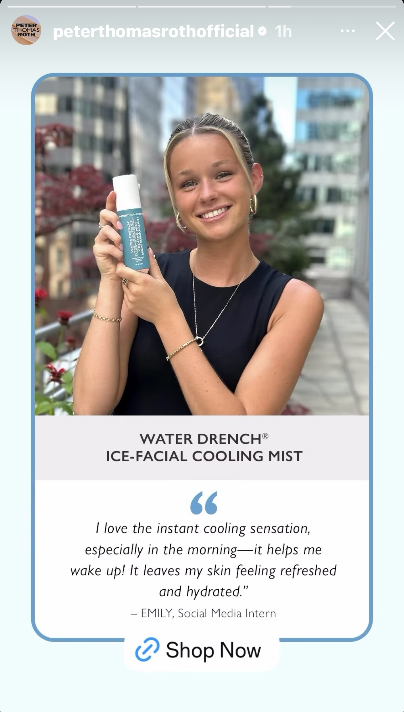

Peter Thomas Roth Social Media Graphic Content
Project Detail
During the summer of 2025 I had the opportunity to work as the social media marketing intern for Peter Thomas Roth. Throughout my internship I was able to explore the impact that social media has on brand growth, and worked to expand the Peter Thomas Roth market from social media. I created lots of trending UGC and organic content for the Peter Thomas Roth socials. I also assisted in created videos and graphics for upcoming launches and teasers, in order to get the most engagement pre-launch.


← Back